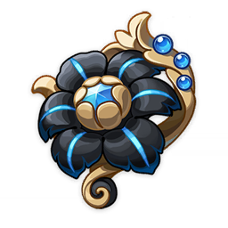

Genshin Impact · Versión 7.2
Análisis del Rol y Escalado
Arlecchino es un personaje de elemento Pyro originario de Snezhnaya que utiliza Lanza y se posiciona en el tier T1.5 (A) Main DPS dentro del rol de Main DPS Pyro On-Field de Pacto Vital (Tier A en 7.2). Su rendimiento en combate gira en torno a este eje principal: Escala con ATQ% y Pacto Vital (solo se cura con su propia Q); viable en Hexerei y Lunar 7.2.
Para maximizar su aporte en el equipo, la configuración prioritaria combina Semblante de la Luna Carmesí con el conjunto de artefactos Fragment of Harmonic Whimsy (4 piezas), respetando la jerarquía de estadísticas Prob. Crítica > Daño Crítico > ATQ% > Maestría Elemental (Vaporizado). y subiendo sus habilidades en orden: Ataques Normales >>> Habilidad Elemental (E) >= Definitiva (Q).
Mejores Armas
Opciones recomendadas ordenadas por rendimiento según el meta actual y compatibilidad con sus rotaciones:
-
 Semblante de la Luna Carmesí ★★★★★BiS Firma674 ATQ base, 22.1% Prob. Crítica; otorga Pacto Vital adicional y +36% Daño total.
Semblante de la Luna Carmesí ★★★★★BiS Firma674 ATQ base, 22.1% Prob. Crítica; otorga Pacto Vital adicional y +36% Daño total. -
 Báculo de Homa ★★★★★Alternativa 5★608 ATQ base, 66.2% Daño Crítico; excelente stat-stick de Crítico y ATQ.
Báculo de Homa ★★★★★Alternativa 5★608 ATQ base, 66.2% Daño Crítico; excelente stat-stick de Crítico y ATQ. -
 Halcón de Jade ★★★★★Alternativa 5★674 ATQ base, 22.1% Prob. Crítica; acumula cargas de ATQ y +12% Daño con Normales rápidos.
Halcón de Jade ★★★★★Alternativa 5★674 ATQ base, 22.1% Prob. Crítica; acumula cargas de ATQ y +12% Daño con Normales rápidos. -
 Lanza del Duelo ★★★★Mejor 4★ PB454 ATQ base, 36.8% Prob. Crítica; sólida consistencia crítica y bufo de ATQ.
Lanza del Duelo ★★★★Mejor 4★ PB454 ATQ base, 36.8% Prob. Crítica; sólida consistencia crítica y bufo de ATQ. -
 Borla Blanca ★★★Mejor F2P (3★)401 ATQ base, 23.4% Prob. Crítica; +48% Daño de Ataques Normales R5.
Borla Blanca ★★★Mejor F2P (3★)401 ATQ base, 23.4% Prob. Crítica; +48% Daño de Ataques Normales R5.
Mejores Sets de Artefactos
Combinaciones de 4 piezas o mezclas de 2 piezas para maximizar su contribución:
-

Fragment of Harmonic Whimsy (4 piezas) BiS Universal+18% ATQ (2p) y +54% Daño total constante por fluctuaciones de Pacto Vital.
-
 Night of the Sky's Unveiling (4 piezas) Alternativa Lunar 7.2
Night of the Sky's Unveiling (4 piezas) Alternativa Lunar 7.2Para variantes con Columbina e Ineffa: otorga Crítico y Bono Lunar en campo.
-
 Gladiator's Finale (4 piezas) Alternativa Clásica
Gladiator's Finale (4 piezas) Alternativa Clásica+18% ATQ y +35% Daño de Ataques Normales muy cerca de Armonía.
Estadísticas Principales y Secundarias
Atributos prioritarios en artefactos para un balance óptimo de daño o soporte:
| Pieza | Estadística Principal |
|---|---|
| Reloj (Arenas) | ATQ% (o ME en Vaporizado/Derretido) |
| Cáliz | Bono Daño Pyro |
| Corona | Prob. Crítica / Daño Crítico |
Prioridad de Subestadísticas
- Prob. Crítica > Daño Crítico > ATQ% > Maestría Elemental (Vaporizado).
Prioridad de Talentos
Ataques Normales >>> Habilidad Elemental (E) >= Definitiva (Q)
Objetivos de Estadísticas (Nivel 90)
Valores de referencia verificados para evaluar el equipamiento de Arlecchino en nivel 90 con artefactos de 5 estrellas:
| Atributo | Meta Recomendada |
|---|---|
| Vida | 18,000 |
| Ataque | 2,000+ ATQ |
| Defensa | 800 |
| Maestría Elemental | 0 – 120 ME (Reacción) |
| Recarga de Energía | 100% – 120% ER |
| Balance Crítico | 70% – 80% CR / 160%+ CD |
Talentos de Combate y Materiales (Nivel 1 al 10)
Habilidades principales de Arlecchino y desglose exacto de libros, materiales y Mora para mejorar sus talentos:


Composiciones de Equipo Recomendadas
Alineaciones con mayor sinergia elemental y amplificación de daño en el Abismo y Teatro Fantasía:
Materiales de Ascensión (Nivel 1 al 90)
Recursos totales requeridos para desbloquear las 6 fases de ascensión de Arlecchino. Coste total de Mora en ascensiones: 420.000 Mora.


Sinergias y Guías Relacionadas
Explora las fichas de armas, artefactos y materiales de los principales compañeros de equipo para Arlecchino: